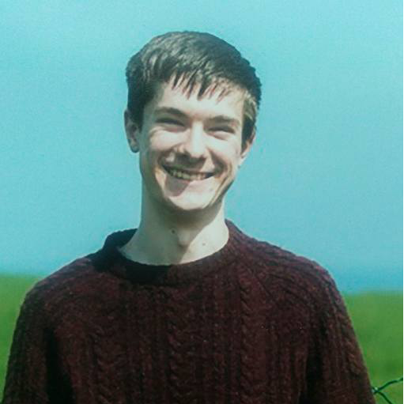

Project Management
The agile development methodology was employed for this project. This allows for more flexible production, as this utilises more frequent iteration of design and development procedures.
As such the project design and prototypes were developed in tandem, with frequent meetings of team members throughout to establish timelines and specifications for project milestones.
This required all team members to communicate effectively and efficiently throughout.
As such Discord was used to allow voice chat, text messaging and screen sharing for the purposes of development meetings and implementation sessions.
The GitHub repository for this project can be accessed here to view game files, developer contributions and production history:
Sleepless Nights GitHub Repository
Leon Irving B00301496
Roles include;
- Documentation
- Level Design
- Environment Art
- Enemy Character Design
- Enemy Character Implementation

Kenneth Yorke B00302185
Roles include;
- Documentation
- Player Character Implementation
- Player Character Design
- Audio Development
- Concept Art Development
- Story Design
- Character Voices
Kirstin Jackson B00328251
Roles include;
- Documentation
- Character Voices
- HTML Prototyping